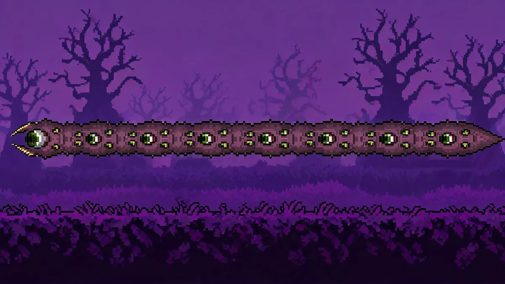

Eater of Worlds Guide —Corruption Worm

| Property | Details |
|---|---|
| HP | 8,490 total (49 segments x ~180 each) / 14,910 (Expert) / 19,110 (Master) |
| Head Damage | 22 (Normal) / 40 (Expert) / 60 (Master) |
| Defense | 2 (Head) / 4 (Body) / 6 (Tail) |
| KB Resistance | 0% (100% head) |
| Spawn | Break 3 Shadow Orbs in the Corruption, or use Worm Food anywhere in the Corruption biome |
Leaves When You Leave the Corruption
If you leave the Corruption biome during the fight, the Eater of Worlds will flee and despawn. Build your arena inside the Corruption.
Summoning
- Break 3 Shadow Orbs —Shadow Orbs are found in the Corruption chasms. Breaking one drops loot and breaking three spawns the Eater. You'll also get a gun (Musket) from the first orb, which is your best early ranged weapon.
- Worm Food —Crafted from 30 Vile Powder + 15 Rotten Chunks at a Demon Altar. Use it anywhere in the Corruption.
Recommended Gear
- Armor: Gold/Platinum is ideal. Demonite is overkill at this stage.
- Weapons: Piercing weapons are king here. A bow with Jester's Arrows (each arrow pierces multiple segments), the Enchanted Boomerang, or the Musket from the first Shadow Orb. The Space Gun with Meteor Armor absolutely destroys this fight.
- Accessories: Hermes Boots, Band of Regeneration, Cloud in a Bottle.
- Arena buffs: Campfire, Star-in-a-Bottle.
Arena Setup
Find a flat area in the Corruption and build 2-3 rows of platforms across about 50 blocks. The key is having room to move sideways while the worm tunnels through the ground. Clear any trees or uneven terrain.
Strategy
The Eater of Worlds is a worm-type boss. It burrows through blocks and surfaces in segments. The core mechanic: every segment is its own entity. A piercing weapon that hits 5 segments does 5x damage per swing.
- Keep moving sideways and fire piercing weapons at worm height. Jester's Arrows or the Space Gun will hit multiple segments each shot.
- When the worm surfaces, aim for the body segments —not the head. Body segments have much lower defense.
- Don't bother with the head. It has higher defense and knockback immunity.
- If the worm splits into smaller worms (below 50% HP), focus on killing one at a time with area damage.
The Space Gun Strategy
The Space Gun with Meteor Armor is arguably the easiest way to beat this boss. Meteor Armor makes the Space Gun cost 0 mana, and the gun itself fires rapidly with piercing shots. You can hold down the fire button and strafe while the worm melts.
Rewards —What's Worth Your Time
- Demonite Ore (50-100) —Worth farming. Demonite is used for early-game gear and the Light's Bane sword (a component of the Night's Edge). You'll need around 100 bars total for a full set.
- Shadow Scales (30-50) —Worth farming. Required for all Demonite-tier armor and tools. One fight usually gives enough for a full set.
- Worm Scarf (Expert) —Very worth it. Reduces all incoming damage by 17%. This is one of the best Expert accessories in the game and stays useful all the way through Hardmode.
Related Guides
- Night's Edge Guide —you need Demonite for the crafting chain
- Boss Progression Order
- Skeletron Guide —next major boss after the Corruption